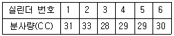
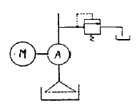

건설기계정비기능사 (2004-02-01 기출문제)
1과목: 건설기계정비(임의구분)
1. 연료파이프 내에 베이퍼록이 일어나면 어떤 현상이 발생 되는가?
- 엔진출력이 저하된다.
- 연료의 송출량이 많아진다.
- 기관 압축압력이 저하된다.
- 기관 출력과는 관계 없다.
(정답률: 69%)

2. 밸브 서어징(surging)현상의 설명 중 알맞는 것은?
- 밸브가 열릴 때 천천히 열리는 현상
- 밸브의 흡기배기가 동시에 열리는 현상
- 고속시 밸브의 고유진동수와 캠의 회전수의 공명에 의하여 스프링이 튕기는 현상
- 고속회전에서 저속으로 변화할 때 스프링의 장력차에 의한 현상
(정답률: 68%)
3. 4행정 싸이클 1-3-4-2의 폭발순서에서 1번이 흡기 행정시 4번은 무슨 행정을 하는가?
- 흡입
- 압축
- 폭발
- 배기
(정답률: 82%)
4. 광원의 광도가 200cd 이고 거리가 2m 일 때의 조도는?
- 50 Lx
- 100 Lx
- 200 Lx
- 400 Lx
(정답률: 49%)
5. 연소실의 체적이 30cc이고 행정의 체적이 150cc인 기관의 압축비는?
- 5:1
- 6:1
- 7:1
- 8:1
(정답률: 64%)
6. 2행정 사이클 디젤기관의 소기를 하기 위해서는?
- 에어 클리너에 의해 고압 공기를 밀어 넣는다.
- 캬브레이타에 의해 고압 공기를 밀어 넣는다.
- 거버너에 의해 고압 공기를 밀어 넣는다.
- 브로워(blower)에 의해 고압 공기를 밀어 넣는다.
(정답률: 66%)
7. 분사펌프의 테스트 결과가 아래와 같을 때 수정을 요하는 실린더는? (단, 불균율 한계는 ± 4(%)이다.)

- 1, 2번 실린더
- 2, 3번 실린더
- 3, 4번 실린더
- 5, 6번 실린더
(정답률: 79%)
8. 4행정 사이클 기관이 3행정을 끝내려면 크랭크 축의 회전 각도는?
- 1080°
- 900°
- 720°
- 540°
(정답률: 79%)
9. AC 발전기의 정류용 다이오드는 무슨 작용을 하는가?
- 발전기 출력제어를 돕는다.
- 발전기 전압을 높인다.
- 발전기 전류를 정류한다.
- 발전기 출력을 증가시킨다.
(정답률: 79%)
10. 라디에이터에서 증기가 분출하는 원인이 될수 없는 것은?
- 냉각수 부족
- 라디에이터 캡의 패킹불량
- 연료 부족
- 라디에이터 핀 막힘
(정답률: 79%)
11. 기동전동기에 대한 시험과 관계가 없는 것은?
- 누설 시험
- 부하 시험
- 무부하 시험
- 회전력 시험
(정답률: 66%)
12. 12(V), 100(AH)의 축전지 2개를 병렬로 접속하면?
- 24(V), 100(AH)가 된다.
- 12(V), 100(AH)가 된다.
- 24(V), 200(AH)가 된다.
- 12(V), 200(AH)가 된다.
(정답률: 72%)
13. 지게차 조종석의 계기판 사용 중 틀리게 설명한 것은 어떤 것인가?
- 엔진유압 경고 등은 엔진의 윤활유 압력상태를 나타내는 것이다.
- 충전 램프는 발전기의 발전상태를 나타내는 것이다.
- 연료계의 바늘이 "E"를 가르키면 연료가 거의 없는 것이다.
- 엔진 수온계의 바늘지침이 녹색(혹은 백색) 범위를 벗어나면 정상이다.
(정답률: 76%)
14. 공회전 상태에서 디젤엔진의 진공도 시험시 진공계 지침이 130∼150mmHg 사이에서 규칙적으로 강약이 있게 흔들리는 경우는?
- 분사시기가 맞지 않을 때
- 배기계통에 막힘이 있을 때
- 헤드 가스켓이 파손되었을 때
- 밸브 타이밍이 틀리지 않을 때
(정답률: 45%)
15. 디젤기관의 실린더 헤드 변형은 무엇으로 점검하는가?
- 마이크로 미터와 강철자
- 다이얼 게이지와 직각자
- 플라스틱 게이지와 필러 게이지
- 직각자와 필러 게이지
(정답률: 73%)
16. 29톤급 굴삭기 엔진에 부착되는 스탭핑 모터의 기능을 바르게 기술한 것은?
- 콘트롤러로 부터 신호를 받아 인젝션펌프를 미세 동작시킨다.
- 콘트롤러로 부터 신호를 받아 엔진의 회전 속도를 제어한다.
- 스피드센서로 부터 신호를 받아 인젝션펌프를 미세 동작시킨다.
- 스피드센서로 부터 신호를 받아 엔진의 회전 속도를 제어한다.
(정답률: 44%)
17. 줄 작업 또는 기계 가공한 평면 또는 곡면을 더욱 정밀하게 다듬질하기 위하여 사용하는 공구는?
- 다이스(dies)
- 스크레이퍼(scraper)
- 정(chisel)
- 탭(tap)
(정답률: 63%)
18. 다음 중 나사 가공시 사용하는 공구가 아닌 것은?
- 탭
- 리머
- 다이스
- 탭핸들
(정답률: 49%)
19. 탄소강의 표면경화 처리방법이 아닌 것은?
- 화염 경화법
- 풀림
- 고주파 경화법
- 침탄법
(정답률: 67%)
20. 칠드 주철의 표면 조직으로 가장 적당한 것은?
- 시멘타이트
- 펄라이트
- 오스테나이트
- 레데뷰라이트
(정답률: 47%)
2과목: 일반기계공학(임의구분)
21. 다음의 V 벨트 중 단면치수가 가장 큰 것은?
- A형
- B형
- C형
- D형
(정답률: 49%)
22. 다음 중 감속비를 가장 크게 할 수 있는 기어는?
- 내접 기어
- 웜 기어
- 베벨 기어
- 헬리컬 기어
(정답률: 37%)
23. 다음 설명 중 틀린 것은?
- 미터 나사는 나사산의 각도가 60° 이다.
- 톱니 나사는 나사산의 각도가 30° , 45° 이다.
- 유니파이 나사는 나사산의 각도가 60° 이다.
- 유니파이 나사의 피치는 인접하는 나사산의 거리를 inch로 나타낸다.
(정답률: 60%)
24. 주성분이 0.8％의 탄소(C)와 18％의 텅스텐(W), 4％의 크롬(Cr), 1％의 바나듐(V)으로 구성된 특수강은?
- 초경합금
- 스테인리스강
- 고속도강
- 스텔라이트
(정답률: 40%)
25. 끼워맞춤에서 구멍의 지름이 500+0.025이고, 축의 지름이 50-0.⑤0-0.025일때 나타나는 최대틈새는 얼마인가?
- 0.000
- 0.025
- 0.⑤0
- 0.075
(정답률: 39%)
26. 제3각법으로 도면을 표현할 때 옳은 것은?
- 배면도는 평면도 위에 위치한다.
- 정면도는 우측면도 우측에 위치한다.
- 평면도는 정면도 위에 위치한다.
- 좌측면도는 정면도 우측에 위치한다.
(정답률: 60%)
27. 1/100mm까지 측정할수 있는 마이크로미터의 딤블을 5눈금 회전 시켰을 때 스핀들의 움직인 양은 얼마인가?(단, 마이크로미터 딤블의 원주는 50등분 되어 있고, 나사 피치는 0.5mm이다.)
- 0.02mm
- 0.04mm
- 0.⑤mm
- 0.2mm
(정답률: 67%)
28. 아세틸렌 발생기의 종류와 관계가 없는 것은?
- 투입식
- 주수식
- 확장식
- 침지식
(정답률: 51%)
29. 기계 제도의 척도로 사용하지 않는 것은?
- 1:2
- 1:5
- 1:√2
- 1:√3
(정답률: 44%)
30. 용접자세에 관한 기호와 뜻으로 잘못 짝지어진 것은?
- 아래 보기 자세 : F
- 수평자세 : H
- 수직자세 : V
- 위보기 자세 : H-Fil
(정답률: 63%)
31. MIG용접과 TIG용접의 공통적인 특징이 아닌 것은?
- 아르곤 또는 헬륨과 같은 가스를 써서 산화를 방지한다.
- 아크(arc)를 이용한 용접법이다.
- 알루미늄, 구리합금과 같은 특수금속을 용접할 수있다.
- 비용극식 용접법이다.
(정답률: 50%)
32. 적재물이 차량의 적재함 밖으로 나올 때는 어떤 색으로 위험표시를 하는가?
- 녹색
- 청색
- 황색
- 적색
(정답률: 73%)
33. 냉각장치에 대한 설명이다. 잘못 표현된 것은?
- 방열기는 상부온도가 하부온도보다 낮으면 양호하다.
- 팬벨트의 장력이 약하면 엔진 과열의 원인이 된다.
- 물펌프 부싱이 마모되면 물의 누수원인이 된다.
- 실린더 블럭에 물때가 끼면 엔진과열의 원인이 된다.
(정답률: 69%)
34. 전기장치의 배선 작업에서 작업 시작전에 제일 먼저 조치 해야할 사항은?
- 코일 1차선을 제거한다.
- 고압 케이블을 제거한다.
- 접지선을 제거한다.
- 밧데리 비중을 측정한다.
(정답률: 69%)
35. 측정계기의 보관방법 중 가장 좋은 것은?
- 캐비넷에 넣어 둔다.
- 책상 서랍속에 넣어 둔다.
- 작업대에 놓아 둔다.
- 오물을 닦아내고 공구실에 둔다.
(정답률: 77%)
36. 기계 가공후 일감에 생기는 거스럼을 가장 안전하게 제거하는 것은?
- 정
- 바이트
- 줄
- 스크레이퍼
(정답률: 53%)
37. 산소 아세틸렌 용접에서의 역류역화의 원인이 아닌 것은?
- 토치의 팁이 과열되었을 때
- 토치의 팁이 석회분에 끼었을 때
- 아세틸렌 가스공급이 안전할 때
- 토치의 성능이 불량할 때
(정답률: 83%)
38. 다음 중 사고예방 대책의 5단계 중 그 대상이 아닌 것은?
- 사실의 발견
- 분석평가
- 시정방법의 선정
- 엄격한 규율의 책정
(정답률: 72%)
39. LPG 충전 사업의 시설에서 저장 탱크와 가스 충전 장소의 사이에 설치해야 되는 것은?
- 역화 방화 장치
- 역류 방지 장치
- 방호벽
- 경계표시
(정답률: 73%)
40. 부품을 분해정비시 반드시 새것으로 교환해야 한다. 아닌것은?
- 오일실
- 볼트, 너트
- 개스 킷
- O 링
(정답률: 74%)
3과목: 안전관리(임의구분)
41. 그라인더 작업시의 주의사항중 부적합한 것은?
- 숫돌 받침대는 3mm이상 간극을 벌려줘야 한다.
- 작업전 숫돌을 나무 해머로 두드려보고 균열 여부를 점검 한다.
- 작업 중에는 반드시 보안경을 착용 해야 한다.
- 작업시 정면을 피해서 작업 하도록 한다.
(정답률: 65%)
42. 탠덤 드라이브 장치란?
- 환향 장치
- 최종 감속장치
- 브레이크 장치
- 연속 장치
(정답률: 54%)
43. 1속기어의 감속비 4:1이고 종 감속비가 5:1인 덤프트럭이 2600rpm으로 기관이 회전하며 1속으로 주행하고 있을 때 바퀴의 회전수는 얼마인가?
- 130rpm
- 260rpm
- 520rpm
- 1000rpm
(정답률: 32%)
44. 일반적인 유압식 브레이크의 잔압으로 맞는 것은?
- 0.1∼0.2Kgf/cm2
- 0.6∼0.8Kgf/cm2
- 1.6∼1.8Kgf/cm2
- 2.1∼2.2Kgf/cm2
(정답률: 61%)
45. 변속기 부축의 축 방향 놀음(end play)은 무엇으로 측정하는가?
- 마이크로미터
- 필러 게이지
- 버어니어캘리퍼스
- 텔레스코핑 게이지
(정답률: 39%)
46. 클러치 페달의 자유간극 조정은?
- 클러치 페달을 움직여서
- 클러치 스프링의 장력을 조정하여
- 클러치 페달 리턴 스프링의 장력을 조정하여
- 클러치 링키지의 길이를 조정하여
(정답률: 60%)
47. 차체에 부착된 상태에서의 조향장치 점검사항이 아닌것은?
- 핸들의 흔들림 유격
- 섹터 샤프트의 흔들림 유격
- 피트먼 아암의 세레이션 마멸과 손상
- 기어물림의 중심점
(정답률: 39%)
48. 굴삭기에 장착된 콘트롤러의 기능으로 맞는 것은?
- 운전 상황에 맞는 엔진 속도제어, 고장진단 등을 하는 장치이다.
- 운전자가 편리하도록 작업장치를 자동적으로 조작시켜 주는 장치이다.
- 조이스틱의 작동을 전자화 한 장치이다.
- 콘트롤 밸브의 조작을 용이하게 하기 위해 전자화 한 장치이다.
(정답률: 54%)
49. 굴삭기의 하부 구동체 주유 개소와 유종(油種)이 틀리게 짝지어진 것은?
- 트랙 - 주유하지 않는다.
- 아이들러 - 기어 오일
- 트랙 롤러 - 그리스
- 트랙 텐션 실린더 - 그리스
(정답률: 58%)
50. 크레인용 와이어 로프의 꼬임 중 스트랜드를 왼쪽 방향으로 꼰 것은?
- Z 꼬임
- 랭 꼬임
- S 꼬임
- 보통 꼬임
(정답률: 55%)
51. 도저의 화이널 드라이브 기어장치 구성부품이라고 볼 수 없는 것은?
- 더블 헬리컬 기어
- 아이들 피니언 기어
- 메인 드라이브 기어
- 피니언 기어
(정답률: 62%)
52. 유압 실린더의 기름이 새는 원인이 아닌 것은?
- 유압 실린더의 피스톤 로드에 녹이나 있다.
- 유압 실런더의 피스톤 로드가 굴곡 되어 있다.
- 유압이 높다.
- 그랜드 씨일(gland seal)이 손상되어 있다.
(정답률: 56%)
53. 유압회로의 구성요소 중에서 회로의 파손을 방지하기 위한 기기라고 볼수 없는 것은?
- 릴리프 밸브
- 스트레이너
- 필터
- 피스톤
(정답률: 60%)
54. 유압회로에서 작동유의 적정온도를 초과할 때 미치는 영향이 아닌 것은?
- 유막의 단절
- 기계작동의 저해
- 시일(seal)제의 노화촉진
- 점도상승
(정답률: 59%)
55. 트럭 믹서의 드럼이 회전되지 않는다. 그 원인으로 가장 잘 맞는 것은?
- 릴리프 밸브의 설정압이 낮다.
- 조작레버 링크 기구의 불량
- 유압모터의 불량
- 밸런스 밸브의 불량
(정답률: 59%)
56. 다음은 유압회로의 일부를 표시한 것이다. A에는 무엇이 연결되어야 하겠는가?

- 유압 실린더
- 오일 여과기
- 펌프
- 방향제어 밸브
(정답률: 66%)
57. 유압기기의 작동원리는 어떤 원리를 이용한 것인가?
- 베르누이의 원리
- 파스칼의 원리
- 보일샬의 원리
- 아르키메데스의 원리
(정답률: 78%)
58. 다음은 불도저의 토크 변환기에 대하여 설명한 것이다. 맞는 것은 어느 것인가?
- 터빈축은 구동판을 거쳐 기관의 플라이휠과 연결되어있다.
- 펌프는 커플링을 거쳐 기관의 플라이휠과 연결되어있다.
- 펌프는 구동판을 거쳐 기관의 플라이휠과 연결되어있다.
- 터빈축은 커플링을 거쳐 기관의 플라이휠과 연결되어있다.
(정답률: 41%)
59. 유압펌프의 캐비테이션(cavitation)현상을 방지하기 위하여 주의하여야 할 사항으로 틀린 것은?
- 오일탱크의 오일점도는 적정점도가 유지되도록 한다.
- 흡입구의 양정을 1m 이상으로 한다.
- 펌프의 운전속도는 규정속도 이상으로 해서는 안된다
- 흡입관의 굵기는 유압펌프 본체의 연결구 크기와 같은 것을 사용한다.
(정답률: 58%)
60. 지게차의 마스트가 완전히 신장되었을 때, 인너레일과 아웃레일이 겹쳐있는 부분의 길이를 무엇이라 하는가?
- 옵셋트
- 오버항
- 오버랩
- 자유간극
(정답률: 51%)